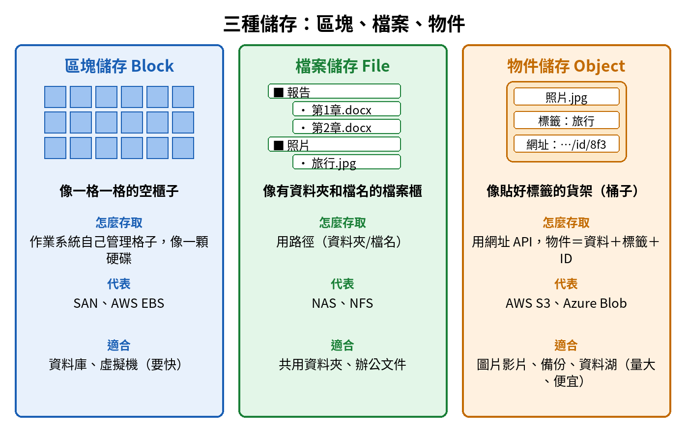
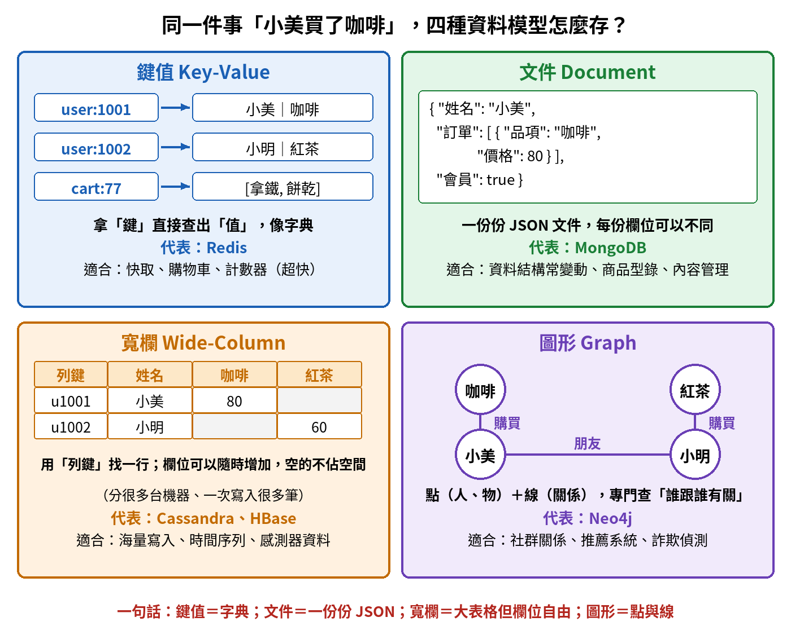
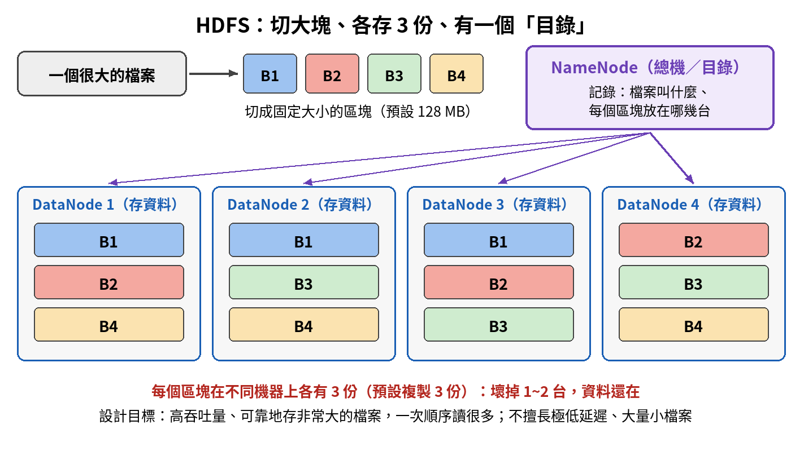
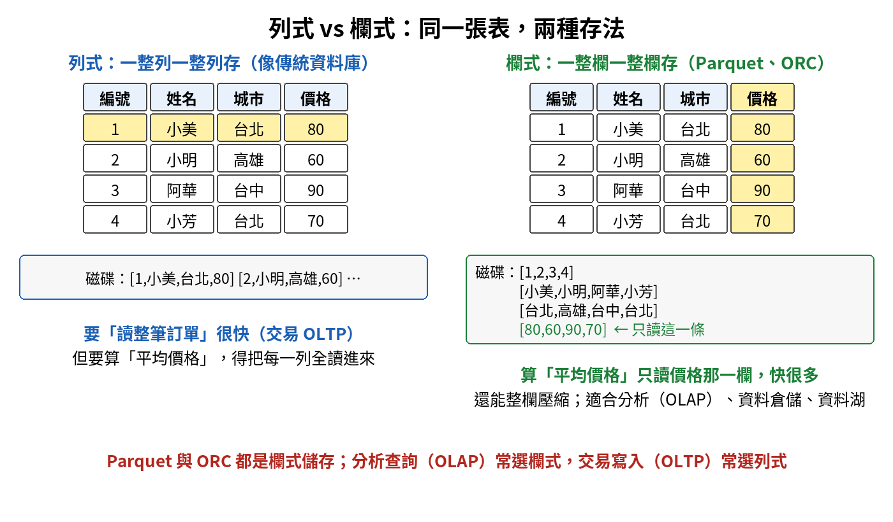
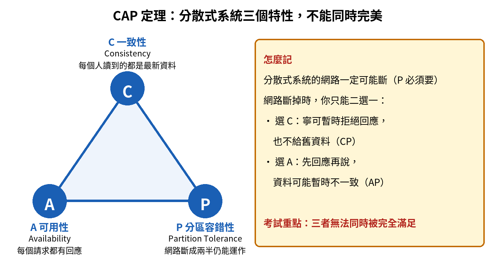
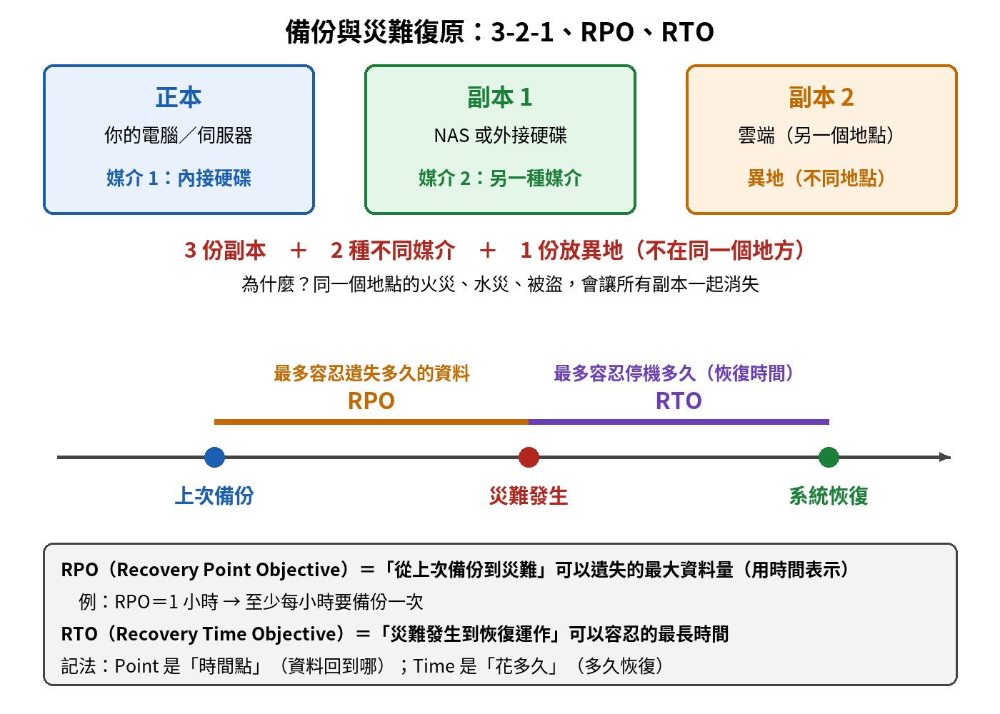

數據儲存與管理｜資料儲存與 NoSQL 觀念圖解複習
先看一張全貌，再拆成五個觀念單元，每個都照「為什麼需要它 → 一步步搭起來 → 對照表 → 易錯提醒」整理。NoSQL 四種資料模型放在最前面、講最細。先看圖，再讀文字。
先看全貌為什麼會有這麼多種「儲存」？
為什麼要先看全貌？ 以前資料很單純：一台電腦、一個資料庫、整齊的表格。後來資料變多、變雜、要求變快，舊做法一個一個卡住，於是每卡住一次，就長出一種新的儲存方式。每一種儲存或資料庫，都是為了解決某一種特定問題而生。記住「它解決什麼問題」，名詞就不會混在一起。
| 新狀況 | 舊做法卡在哪 | 於是出現 |
|---|---|---|
| 資料量遠超過一台伺服器 | 一台機器裝不下 | 分散式儲存：很多台機器一起存（HDFS、雲端物件儲存） |
| 資料不整齊：圖片、影片、文字、JSON | 表格欄位規定死，放不進去 | NoSQL、資料湖 |
| 要超快查：購物車、快取 | 傳統資料庫太慢 | 鍵值儲存、記憶體資料庫（Redis） |
| 要查「誰跟誰有關」 | 表格查關係要連好幾層 | 圖形資料庫（Neo4j） |
| 要做大量分析、報表 | 處理交易的資料庫不適合 | 資料倉儲、欄式儲存 |
| 怕資料遺失 | 只有一份，一壞就沒了 | 複製、備份、糾刪碼 |
單元 ①三種儲存：區塊、檔案、物件
為什麼需要這個概念？ 「區塊」「檔案」「物件」這三個詞常常一起出現，又都叫「儲存」，很容易糊成一團。它們的差別在於：資料被切成什麼單位、用什麼方式找回來。雲端服務（像 AWS、Azure）會把這三種分別做成不同產品，所以看到產品名要能配回類型。
一步步搭起來
- 區塊儲存：把硬碟切成一格一格固定大小的空櫃子，格子裡放什麼、怎麼排，由作業系統或資料庫自己安排。最貼近硬體，所以最快。
- 檔案儲存：在格子上面加一層「檔案系統」，用資料夾和檔名（路徑）來找資料，大家習慣的共用資料夾就是這種。
- 物件儲存：不用資料夾，每份資料打包成一個「物件」＝資料本身＋標籤（中繼資料）＋唯一 ID，丟進一個大桶子，用網址 API 存取。量再大都能往上加，而且便宜。

| 區塊 Block | 檔案 File | 物件 Object | |
|---|---|---|---|
| 比喻 | 一格格空櫃子 | 有資料夾的檔案櫃 | 貼好標籤的貨架 |
| 怎麼找資料 | 作業系統／資料庫自己管理格子 | 路徑＋檔名 | 網址 API＋物件 ID |
| 代表 | SAN、AWS EBS | NAS、NFS | AWS S3、Azure Blob |
| 適合 | 資料庫、虛擬機（要快） | 共用資料夾、辦公文件 | 圖片影片、備份、資料湖（量大、便宜） |
- NAS 與 SAN：NAS 提供檔案級儲存，像一個共用資料夾；SAN 提供區塊級儲存，像直接幫伺服器接上一顆硬碟。
- 資料湖的底層通常是便宜、可以一直擴充的物件儲存或 HDFS。
單元 ②NoSQL 的四種資料模型：鍵值、文件、寬欄、圖形
為什麼需要這個概念？ 傳統關聯式資料庫（SQL）把資料放進欄位事先規定好的表格，很嚴謹，也保證強一致（ACID）。但遇到「資料結構常變」「資料量超級大」「關係超複雜」就吃力。NoSQL（Not Only SQL）不是一種資料庫，而是一整個家族，每一種擅長一件不同的事。這一塊最常考的就是「產品名 ↔ 類型」配對。
一步步搭起來
- 先記住共同點：NoSQL 大多容易水平擴充（高擴展性）、結構有彈性（彈性綱要）、高可用性。共同的代價是不一定提供傳統資料庫那種強 ACID 交易保證。
- 再用同一件事比較四種存法：下圖把「小美買了咖啡」這件事，分別存進四種模型。
- 鍵值：拿一個「鍵」直接查出「值」，像查字典，最簡單也最快。
- 文件：每筆資料是一份類似 JSON 的文件，每份文件的欄位可以不一樣。
- 寬欄：看起來像大表格，用「列鍵」找到一行，但欄位可以隨時增加、空的不佔空間，資料分散在很多台機器。
- 圖形：只存「點」（人、物）和「線」（關係），專門回答「誰跟誰有關」。

| 類型 | 一句話 | 代表產品 | 適合 |
|---|---|---|---|
| 鍵值 Key-Value | 拿「鍵」直接查出「值」，像字典 | Redis | 快取、購物車、計數器（要超快） |
| 文件 Document | 一份份 JSON 文件，欄位可不同 | MongoDB | 資料結構常變動、商品型錄、內容管理 |
| 寬欄 Wide-Column | 大表格，但欄位自由增減，分散在多台機器 | Cassandra、HBase | 海量寫入、時間序列、感測器資料 |
| 圖形 Graph | 點（人、物）＋線（關係） | Neo4j | 社群關係、推薦系統、詐欺偵測 |
用情境關鍵字反推類型
- 看到「快取」「超低延遲」「購物車」「計數器」→ 鍵值（常放在記憶體裡）。
- 看到「JSON」「結構常變」「每筆欄位不同」→ 文件。
- 看到「海量寫入」「時間序列」「感測器」→ 寬欄。
- 看到「關係複雜」「社交網路」「推薦」「誰認識誰」→ 圖形。
- 產品配對口訣：瑞迪斯查字典、蒙果看文件、卡珊卓拉存大表、奈歐四傑畫關係。
單元 ③HDFS：把大檔案切碎、每塊各存 3 份
為什麼需要這個概念？ HDFS（Hadoop 分散式檔案系統）是大數據的「儲存底座」。一個檔案大到一台機器裝不下、讀不完，怎麼辦？切成大塊，分散到很多台便宜的機器上，而且每塊多存幾份，壞掉幾台也不怕。
一步步搭起來
- 切成區塊（Block）：預設 128 MB 一塊（舊版 64 MB，也可以設 256 MB），比一般電腦檔案系統的區塊大很多。
- 每塊存 3 份：預設複製係數是 3，三份放在不同機器。壞掉一兩台，資料還在，這就是容錯。
- NameNode＝總機／目錄：只記「檔案叫什麼、每個區塊放在哪幾台」（命名空間＋區塊對應表），不存實際資料。
- DataNode＝倉庫：真正存放區塊的機器。

| 角色 | 屬於誰 | 負責什麼 |
|---|---|---|
| NameNode | HDFS | 命名空間、區塊對應表（目錄），不存資料本身 |
| DataNode | HDFS | 存放實際的區塊 |
| ResourceManager | YARN | 整個叢集的運算資源分配 |
| NodeManager | YARN | 每台機器上的運算資源管理 |
| HDFS 擅長 | HDFS 不擅長 |
|---|---|
| 高吞吐量：一次順序讀寫大量資料 | 極低延遲的隨機讀寫（這種需求改用 Redis 等） |
| 可靠地存非常大的檔案、串流式存取 | 大量小檔案（NameNode 的目錄會被塞爆） |
| 高擴展性、高容錯性 | 完整支援 POSIX 的所有檔案操作 |
單元 ④欄式儲存、資料倉儲與資料湖
為什麼需要這個概念？ 同一份資料，要「記一筆訂單」跟要「分析全部訂單」，最適合的存法不一樣。前者一次要一整筆，後者一次只要某一欄的所有值。分析需求長大之後，又分化出資料倉儲、資料湖、湖倉一體這幾種「大型資料存放區」。
一步步搭起來：列式 vs 欄式
- 列式：一整列一整列存，讀「整筆訂單」很快，適合交易處理（OLTP）。
- 欄式：一整欄一整欄存，要算「平均價格」只讀價格那一欄，快很多；同一欄資料型態一樣，還很好壓縮，適合分析處理（OLAP）。
- Parquet、ORC 是資料湖裡最常用的欄式檔案格式。

資料倉儲、資料湖、湖倉一體
| 資料倉儲 DW | 資料湖 Data Lake | 湖倉一體 Lakehouse | |
|---|---|---|---|
| 存什麼 | 整理過的結構化資料 | 各種原始資料（結構化、半結構化、非結構化） | 兩者兼具 |
| 綱要何時定 | 寫入時先定（Schema-on-Write） | 讀取時才定（Schema-on-Read） | 兩者兼具 |
| 用途 | BI、報表、決策分析（OLAP） | 探索、機器學習、保存原始資料 | 同一份資料兩種用途都能做 |
| 底層 | 關聯式資料庫、欄式儲存 | 物件儲存或 HDFS（便宜、可擴充） | 在資料湖上加管理與 ACID（例：Delta Lake） |
- 資料沼澤（Data Swamp）：資料湖沒有治理，什麼都往裡丟，最後品質低、找不到、不能用。
- 資料市集（Data Mart，也有人譯作資料超市）：資料倉儲的子集，只聚焦某個部門或某個主題。
維度緩慢變更 SCD：客戶搬家了，倉儲怎麼記？
客戶小美本來住台北，後來搬到高雄。資料倉儲裡的「客戶」維度要怎麼改，有三種經典做法：
| 類型 | 做法 | 結果 | 保留歷史嗎 |
|---|---|---|---|
| Type 1 | 直接覆蓋舊值 | 只剩「高雄」 | 沒有 |
| Type 2 | 新增一列，用生效日、失效日或版本號區分 | 「台北（到 8/1）」與「高雄（8/1 起）」兩列都在 | 有，完整保留 |
| Type 3 | 新增一個欄位存上一個值 | 目前城市＝高雄，先前城市＝台北 | 只保留上一次 |
單元 ⑤CAP 定理與資料保護
為什麼需要這個概念？ 資料一旦分散在很多台機器，就會遇到兩個現實問題：機器之間的網路會斷，以及機器本身會壞。CAP 定理說明網路斷掉時系統只能怎麼取捨；複製、糾刪碼、備份則是防止機器壞掉時資料消失。
一步步搭起來：CAP 定理
- C 一致性（Consistency）：每個人讀到的都是最新資料。
- A 可用性（Availability）：每個請求都會得到回應。
- P 分區容錯性（Partition Tolerance）：網路斷成兩半，系統仍能繼續運作。
- 結論：三者無法同時被完全滿足。分散式系統的網路一定可能斷，P 必須要，所以斷線時只能在 C 和 A 之間二選一（CP 或 AP）。

資料保護：複製、糾刪碼、3-2-1、RPO 與 RTO

| 複製 Replication（例：HDFS 存 3 份） | 糾刪碼 Erasure Coding | |
|---|---|---|
| 做法 | 整份資料多存幾份 | 資料切成 k 塊，再算出 m 塊「校驗塊」，壞掉任意 m 塊都能算回來 |
| 空間用量 | 3 份＝佔 3 倍空間 | 例如 6 塊資料＋3 塊校驗＝只佔 1.5 倍空間 |
| 容錯 | 3 份可壞 2 份 | 6＋3 可壞任意 3 塊 |
| 代價 | 簡單、讀取快 | 計算較複雜，修復時要重算；資料仍分散在網路上的多台機器 |
| 名詞 | 意思 | 記法 |
|---|---|---|
| 3-2-1 原則 | 3 份資料、2 種不同媒介、1 份放異地 | 防同一地點的火災、水災、被盜讓所有副本一起消失 |
| RPO | 最多能容忍遺失多久的資料 | Point＝資料回到哪個時間點；RPO 1 小時 → 至少每小時備份一次 |
| RTO | 最多能容忍停機多久 | Time＝花多久恢復 |
總整理本章要記的十五句話
- 每種儲存都是為了解決一個特定問題；先問「要解決什麼問題」，再配名詞。
- 區塊＝格子（資料庫、虛擬機）；檔案＝資料夾與檔名（NAS）；物件＝貼標籤的貨架（S3、Azure Blob）。
- NAS 是檔案級、SAN 是區塊級；資料湖底層常用物件儲存或 HDFS。
- Redis＝鍵值：像字典，用在快取。
- MongoDB＝文件：一份份 JSON，結構常變也沒關係。
- Cassandra、HBase＝寬欄：海量寫入、時間序列。
- Neo4j＝圖形：點與線，查「誰跟誰有關」。
- NoSQL 的長處是高擴展、彈性綱要、高可用；強 ACID 交易保證不是它的長處。
- HDFS 切 128 MB 大區塊、每塊存 3 份；NameNode 管目錄、DataNode 存資料；重吞吐，不重低延遲。
- ResourceManager、NodeManager 屬於 YARN，管運算資源，不是 HDFS 的儲存節點。
- Parquet、ORC 是欄式；分析（OLAP）用欄式，交易（OLTP）用列式。
- 資料倉儲寫入時定綱要、資料湖讀取時定綱要；湖倉一體＝資料湖加上 ACID（Delta Lake）。
- SCD：Type 1 覆蓋、Type 2 新增一列保留完整歷史、Type 3 新增一欄。
- CAP＝一致性、可用性、分區容錯性，三者不能同時完美；C 不是 Capacity。
- 3-2-1＝3 份、2 種媒介、1 份異地；RPO 看可遺失多少資料、RTO 看多久恢復；糾刪碼比複製省空間。
其他章：L22 觀念複習總目錄